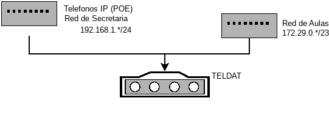
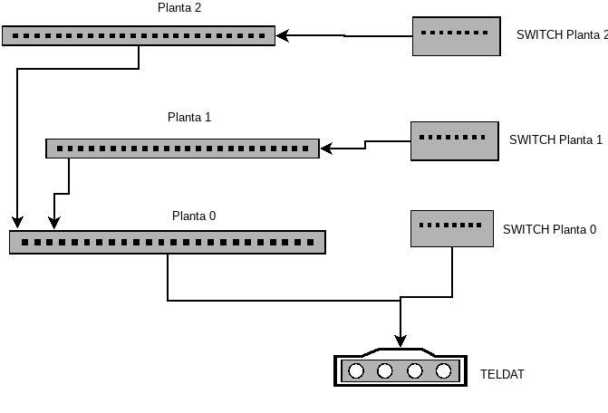

Descripción de la red.
La red del centro es 172.29.0.0/23
No todas las direcciones IP estan asignadas en DHCP
- 172.29.0.[1-254] - IPs estáticas
- 172.29.1.[1-254] - IPs dinámicas
Puerta de enlace: 172.29.0.1
DNS : 8.8.8.8 y 8.8.4.4 -> Qué están proxificados y que resuelven a :
Puertos no proxificados en Macrolan:
Topología
Básica

Red Básica
Cableado estructurado

Red - Cableado
Red Wifi
Se utilizan 4 puntos de acceso Unifi para la gestión de la WiFi, se hace relay del DHCP del Teldat,
luego las direcciones IP que asignan son: 172.29.1.*.
Aulas de Ciclos
Una única red:
192.168.4.0/24
Servidor Aula 4
IP: 192.168.4.254
Servicios
-
DHCP y Enrutamiento PCs aulas 3 y 4
-
Gestor de los Unifi de la WiFi
- Repositorio de cosas para los ciclos
- Nagios
- OCS Inventory
Se encuentra en las dos redes con las IPs 172.29.0.254 y 192.168.4.254
Sistema Operativo
Ubuntu 16.04 - Para ACTUALIZAR
Equipos Aula 3
Dotación de consellería, inventariados
Software
SO: KDE Neon - 18.04 (bionic)
Usuarios smx y daw - pass (smx3 y daw3)
SSH instalado pero controlado para el usuario tic
/home esta aparte
Tareas pendientes
Equipos Aula 4
Dotación de consellería, inventariados
Software
SO: KDE Neon - 18.04 (bionic)
Usuarios smx y daw - pass (smx3 y daw3)
SSH instalado pero controlado para el usuario tic
/home esta aparte